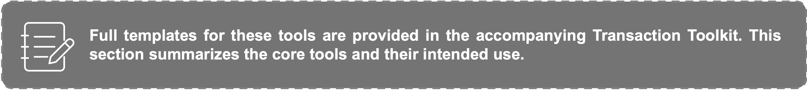

13.1 How to Use the Companion Toolkit
This Playbook provides the framework, diagnostic logic, partnership models, role-selection guidance, capital sequencing concepts, and systems perspective needed to design deployable partnership pathways. The practical application tools are provided separately through the Companion Toolkit, which is intended to support structured assessment, decision-making, implementation planning, monitoring, and learning. The Toolkit translates the concepts presented throughout this Playbook into practical decision-support resources that can be used by CSOs, governments, foundations, DFIs, development actors, intermediaries, investors, SMEs, and institutional strategy leaders. The Toolkit should be used alongside the Playbook rather than as a standalone resource. The Playbook explains why particular decisions matter and when different approaches are appropriate; the Toolkit provides the worksheets, scorecards, diagnostics, templates, and decision-support tools needed to apply those concepts in practice.
The Toolkit includes both cross-cutting resources and model-specific resources. Cross-cutting tools support diagnosis, role selection, capital planning, risk assessment, and monitoring across all partnership models. Model-specific tools provide tailored worksheets and templates for Aggregation and Warehouse Platforms, Integrated Project Preparation and Guarantee Platforms, and Predictable Delivery Networks.
Attention should be given to the Impact Capital Continuum Worksheets, which provide practical guidance on capital sequencing across different stages of deployability. Separate worksheets are provided for each partnership model to reflect their different financing pathways, risk profiles, and progression toward domestic and commercial capital participation. Together, the Playbook and Toolkit are intended to help users move from diagnosis, to model selection, to execution planning, to implementation, monitoring, and learning in a structured and repeatable way.
13.2 Toolkit Structure and Purpose
The Toolkit is organized around six practical functions that mirror the stages of partnership development.
